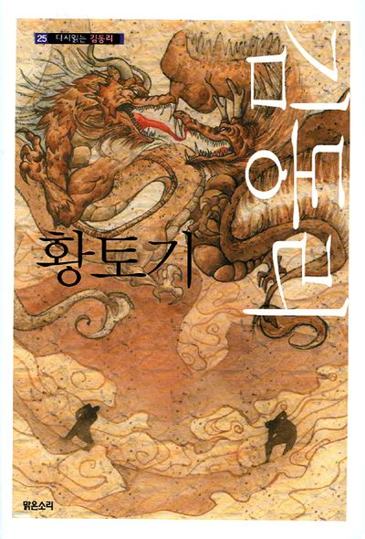
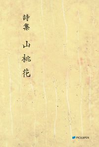
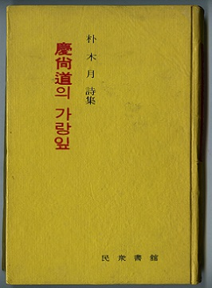
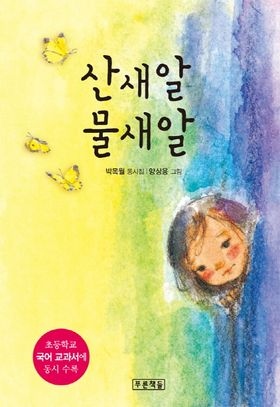

동리목월문학관
전화 054-779-6090
팩스 054-760-7598
문학관 소개
소개
동리목월문학관은 경주 출신으로 한국 문학사에 굵은 족적을 남긴 소설가 김동리와 시인 박목월의 문학적 위업을 기리기 위해 토함산 자락에 건립되었다. 동리목월문학관은 2006년에 건립하여 오늘에 이르고 있으며, 「동리관」,「목월관」,「신라를 빛낸 인물관」으로 나누어 전시하고 있다.
전시자료
2층은 동리 문학관과 목월 문학관으로 나누어져 있으며 두 문인의 집필 흔적을 볼 수 있도록 서재를 재현했다. 이곳에서 집필도구와 각종 문서, 출판 도서물을 볼 수 있으며 어린이 관객의 쉬운 이해를 위한 소설 내용을 제작한 영상물과 녹음된 시낭송을 들을 수 있다.
문학관 연혁
문창대학운영
진행 프로그램

동리목월문학제
동리목월의 생애와 문화 업적을 기리며 문학관을 활성화하기 위해 진행하는 다양한 프로그램을 아우른다. 동리목월 문예창작대학, 동리목월계간지, 동리목월문학심포지엄, 엄마와 함께 문학으로 놀자, 전국동리목월백일장, 지역을 찾아가는 시낭송의 밤, 동리목월문학상, 동리목월 계간지 신인상 등을 통틀어 말한다.
- 일시: 1월 ~ 12월
- 참가대상: 행사마다 다름
개관 정보
3월~10월: 09:00 ~ 18:00 / 11월~2월: 09:00 ~ 17:00
휴관일: 1월 1일, 매주 월요일, 설날 및 추석 당일
위치
찾아가는 길
- 경북 경주시 불국로 406-3 동리목월문학관KTX 경주역 1번 출입구로 나와 ‘경주역(KTX)’ 정류장에서 711번 버스 이용하여 불국사 정류장에서 하차 후 도보 9분


무녀도
전통 토속 신앙과 서양 기독교 신앙의 대립 속에서 변해가는 시대에 소멸해가는 것을 지키려는 인간의 비극적인 운명이다. 또한 무속 신앙과 기독교 신앙의 갈등으로 인한 혈육 간의 비극적인 파국을 다루고 있다.
황토기
황토골에 얽힌 설화와 더불어, '억쇠'와 '득보'라는 두 인물의 삶을 통해 가혹한 운명, 인간 본연의 원초적인 고뇌와 한을 보여준다. 또한, 억압적인 현실 속에서 구원받지 못하고 저주받은 피의 상속성, 그리고 삶의 허무함과 같은 김동리 문학의 주요 특징을 담고 있다.

등신불
인간의 번민과 고통의 종교적 승화, 그리고 존재의 본질 탐구한 작품이다. 어머니의 죄업을 대신 씻기 위해 자신의 몸을 태워 부처님께 공양 올리는 등신불 설화를 통해, 현실의 고통에서 벗어나고자 하는 인간의 구원 의지를 불교적 이념과 결합하여 심오하게 그린다.
산도화
보랏빛 구강산의 고요함 속에서 산도화 두어 송이가 절제된 아름다움을 드러낸다. 세속을 떠난 그곳에서 봄눈 녹은 옥 같은 시냇물에 암사슴이 평화롭게 발을 씻는, 티 없이 맑고 고결한 이상 세계를 동양화처럼 그려낸 시다.
경상도의 가랑잎
고통스러운 현실을 강인한 생명력이나 모성적 포용력으로 극복하려는 의지가 담겨있다.
산새알 물새알
이 시는 각기 다른 환경과 특성을 지닌 산새알과 물새알의 모습을 통해, 자연 속 모든 생명체가 지니고 있는 고유한 아름다움과 생명의 탄생이 가져다주는 신비로움, 그리고 자연과의 조화 속에서 피어나는 순수한 동심의 세계를 노래하고 있다.